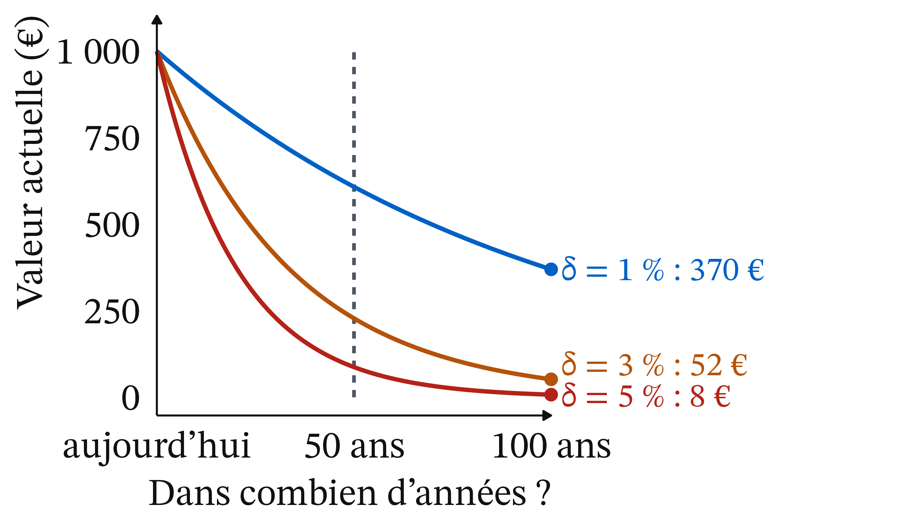

Peut-on donner un prix au futur ? Le climat entre Nord et Sud
CM 10 · Ouverture
ATER en économie, Université Clermont Auvergne
La tonne de CO₂ évitée vaut 256 € en 2025, contre 187 € auparavant
- En euros de 2023, par tonne d’équivalent CO₂
- Elle vaudra 300 € en 2030
- Rentable pour la collectivité si elle coûte moins de 256 €
- Taux d’actualisation : 3,2 % par an
(L’info durable, 20/03/2025 ; OFCE, blog, 18/11/2025)
Les pays riches promettent 300 milliards de dollars par an d’ici 2035
- COP29 : « au moins 300 milliards de dollars par an d’ici 2035 », au lieu de 100
- COP30 : « au moins tripler » l’aide à l’adaptation d’ici 2035
- COP31 : Antalya, 9-20 novembre 2026
(AFP, Connaissance des Énergies, 24/11/2024 ; Connaissance des Énergies, mis à jour le 17/03/2026 ; UNRIC, 02/03/2026)
Peut-on donner un prix au futur, et qui doit payer, du Nord ou du Sud ?
- Une tonne émise aujourd’hui fera des dégâts pendant des décennies, mais son prix se fixe aujourd’hui, à partir d’un taux.
- Les pays qui ont le plus émis ne sont ni ceux qui subissent le plus, ni ceux qui émettent le plus aujourd’hui.
Rappel : quatre notions et une distinction suffisent pour la séance
- Prix : ce qu’il faut céder pour une unité ; il signale la rareté
- Cms = Cm + Dm, Dm étant le dommage marginal
- Taux réel r ≈ i − π
- Croissance g : variation du PIB, en % par an
- Positif décrit ; normatif juge
Un dommage climatique arrive tard, il faut donc le ramener à aujourd’hui
Définition 1 (Actualisation) Actualiser, c’est convertir un montant futur en sa valeur d’aujourd’hui. 100 € placés à 5 % deviennent 105 € dans un an ; donc 105 € dans un an valent 100 € aujourd’hui.
Plus le taux δ est élevé, moins le futur pèse dans la décision
Définition 2 (Taux d’actualisation) Le taux d’actualisation (δ) est le taux, en % par an, auquel on réduit la valeur d’un montant pour chaque année qui le sépare d’aujourd’hui. Plus δ est élevé, moins le futur pèse dans la décision.
Définition 3 (Valeur actuelle) Valeur actuelle = montant ÷ (1 + δ)n ; le facteur 1 ÷ (1 + δ)n est compris entre 0 et 1.
Ramsey : combien épargner pour nos descendants, sans compter moins leur bien-être
Frank Ramsey (1928), « A Mathematical Theory of Saving », The Economic Journal · école néoclassique. L’épargne optimale dépend de la richesse qu’elle procurera aux générations suivantes ; l’impatience pure, il la juge injustifiable.
Le taux additionne l’impatience pure et un terme lié à la croissance
δ = impatience pure + aversion à l’inégalité × g
- Impatience pure : préférer le présent seulement parce qu’il est le présent
- Aversion à l’inégalité : à 0, un euro vaut un euro pour tous ; à 2, on donne beaucoup de poids au plus pauvre
Nordhaus : le taux d’actualisation se lit dans les rendements du marché
2018 · Bengt Nyman, CC BY 2.0, Wikimedia Commons
William Nordhaus (1992), Science · école néoclassique. Modèle DICE : avec un taux proche des rendements du capital, la politique optimale réduit les émissions progressivement, avec un prix du carbone qui monte.
Rendement réel avant impôt du capital des entreprises américaines : « d’environ 7 % par an » pendant quarante ans (Nordhaus, Yale, 2007 ; notre traduction).
Stern : le choix du taux est d’abord éthique
2015 · Royal Society, CC BY-SA 4.0, Wikimedia Commons
Nicholas Stern (2006), The Stern Review (HM Treasury) · économie publique. Rien ne justifie de compter moins une personne parce qu’elle naîtra plus tard.
Taux réel d’équilibre : 1,4 % par an (Nordhaus, 2007).
Le coût social du carbone dépend du taux
Définition 4 (Coût social du carbone) Valeur actuelle de tous les dommages futurs causés par une tonne de CO₂ émise aujourd’hui. C’est le dommage marginal Dm de l’externalité climatique. Il dépend donc de δ.
La VAC française est un prix d’objectif, pas une mesure des dommages
Définition 5 (Valeur de l’action pour le climat (VAC)) Prix d’une tonne de CO₂ évitée retenu par l’État pour évaluer les projets : celui qui atteint l’objectif d’émissions (neutralité en 2050) au moindre coût. Elle croît au rythme de δ.
(OFCE, 18/11/2025)
Entre 1 % et 5 %, la valeur actuelle de 1 000 € dans un siècle est divisée par près de 50

Figure 1
Actualiser à la main : 121 € dans deux ans valent 100 € aujourd’hui à 10 %
Exemple 1 (Actualiser à la main)
- 121 ÷ 1,1 ÷ 1,1 = 100 €
- À 7 % : 10 ans pour diviser par deux ; 1 000 € dans un siècle → environ 1 €
- À 1 % : 70 ans ; 1 000 € dans 70 ans → environ 500 €
Pause
15 minutes.
Le même projet est accepté à 1 % et refusé à 3 %
Exemple 2 (Payer 100 aujourd’hui pour éviter 1 000 dans cent ans) Chiffres fictifs. Facteurs à 100 ans : 0,370 ; 0,052 ; 0,008.
- 1 % : 1 000 × 0,370 = 370 > 100, on construit
- 3 % : 52 < 100, on ne construit pas
- 5 % : 8
- Seuil : environ 2,3 %
Actualiser ne revient pas à dire que les générations futures ne comptent pas
Avec une impatience nulle, on actualise encore si l’on pense que le futur sera plus riche (règle de Ramsey). Un taux élevé peut se défendre au nom des générations futures. Le désaccord porte sur la valeur du taux, pas sur le principe d’actualiser.
La règle de Ramsey explique l’écart entre 1,4 % et 5,5 %
- « À la Stern » : 0,1 + 1 × 1,3 = 1,4 %
- « À la Nordhaus » : 1,5 + 2 × 2 = 5,5 %
Paramètres d’illustration : seuls le 1,4 % de Stern et l’impatience de 1,5 % de DICE-2007 viennent de Nordhaus (2007).
Avec un taux faible, l’optimum d’émissions est bas
![Graphique avec les émissions en abscisse et des euros par tonne en ordonnée. Une droite bleue décroissante représente le bénéfice d'émettre D. Une droite horizontale ambre basse représente le coût privé Cm ; elle coupe D au point Q étoile, à droite. Deux droites horizontales ambre en tirets, plus hautes, représentent le coût marginal social : la plus basse, si le taux d'actualisation est élevé, coupe D en un optimum Q rond au milieu ; la plus haute, si le taux est faible, coupe D en un optimum Q rond à gauche.](cm10_files/figure-revealjs/fig-cms-taux-1.png)
Figure 2
Chez Nordhaus, la taxe optimale passe de 30 $ à 300 $ avec les paramètres de Stern
Taxe carbone optimale pour 2010 dans DICE : environ 30 $ par tonne de carbone, contre environ 300 $ avec les paramètres éthiques de Stern, soit environ 8 $ et 80 $ par tonne de CO₂.
(Nordhaus, Yale, 2007)
À 3,2 % par an, la VAC passe de 256 € en 2025 à 300 € en 2030
Exemple 3 (La valeur de l’action pour le climat)
- 2026 : 256 × 1,032 ≈ 264 €
- 2030 : 256 × 1,17 ≈ 300 €
(OFCE, 18/11/2025 ; L’info durable, 20/03/2025)
La VAC trie les projets : la pompe à chaleur passe, le biométhane non
- Pompe à chaleur : environ 125 € la tonne évitée, rentable
- Biométhane : environ 393 €, pas rentable au seul regard du carbone
La VAC « ne doit pas être confondue avec un niveau souhaitable ou optimal de taxe carbone ».
(France Stratégie, cité par L’info durable, 20/03/2025)
Un taux élevé ménage le présent, un taux faible demande un effort tôt
- Taux élevé : on réduit plus tard, quand on sera plus riche. La génération actuelle y gagne ; celle qui subira le réchauffement y perd, sauf si on lui transmet plus de capital.
- Taux faible : effort tôt, au profit de générations plus riches si la croissance continue.
Les États-Unis et l’UE ont émis près de 40 % du CO₂ cumulé avec moins de 10 % de la population

Figure 3
Source : Global Carbon Budget (2025) ; population : HYDE (2023), Gapminder (2022), Nations unies (2024) ; Our World in Data, 21/10/2026.
Par habitant, la Chine dépasse l’UE chaque année depuis 2017
![Six courbes de 1990 à 2024. La courbe bleue des États-Unis, la plus haute, part d'environ 20 tonnes par habitant, reste autour de 20 tonnes jusqu'en 2007 puis baisse jusqu'à 14,2 tonnes. La courbe ambre de l'Union européenne à 27 baisse de 9,2 à 5,4 tonnes. La courbe rouge de la Chine monte de 2,2 à 8,7 tonnes et passe au-dessus de l'Union européenne vers 2013, durablement depuis 2017. La moyenne mondiale, en tirets noirs, reste entre 4 et 5 tonnes. L'Inde, en gris, monte de 0,7 à 2,2 tonnes ; l'Afrique, en pointillés gris, reste autour d'une tonne.](cm10_files/figure-revealjs/fig-flux-co2-1.png)
Figure 4
Source : Global Carbon Budget (2025), Our World in Data, 21/10/2026.
Le raisonnement qui réduit l’effort entre générations l’augmente entre pays
Si l’on compte moins nos descendants plus riches, on doit compter plus un agriculteur sahélien qu’un cadre parisien.
CCNUCC (1992, art. 3.1) : « responsabilités communes mais différenciées et […] capacités respectives » ; les pays développés « à l’avant-garde ».
Les négociations traduisent ce débat en milliards de dollars
- Bakou : 300 milliards par an d’ici 2035
- La Chine a refusé d’être contributeur obligé : contributions volontaires
- Belém : aide à l’adaptation d’environ 40 à 120 milliards par an d’ici 2035 ; enveloppe de 300 non relevée
(AFP, Connaissance des Énergies, 24/11/2024 ; Connaissance des Énergies, mis à jour le 17/03/2026)
Pour Nordhaus lui-même, « presque toute la différence » vient de l’actualisation
Positif.
- Stern face aux autres études (Yale, 2007 ; notre traduction)
- Coût social du carbone chez Nordhaus : de 50 à 235 dollars par tonne de carbone (14 à 64 par tonne de CO₂), selon 5 % ou 2,5 % (The Conversation, 12/11/2018)
Le résultat dépend aussi de la fonction de dommages
Positif. Elle traduit un réchauffement en perte de production. Dans le modèle de Nordhaus, 6 °C ne détruiraient que 10 % du PIB mondial (The Conversation, 12/11/2018). Plus cette perte est forte, plus Dm est haut, quel que soit le taux.
Le choix du taux contient un jugement de valeur
Normatif.
- Faut-il une impatience pure ? Ramsey et Stern disent non, pour des raisons morales
- Quel poids donner à l’égalité, entre générations et entre pays ?
- Faut-il prendre le rendement du capital comme repère ?
Nordhaus lit le taux sur le marché, Stern le choisit, d’autres contestent le calcul
- Nordhaus : taux « descriptif », prix du carbone qui monte progressivement
- Stern : taux « prescriptif », réductions fortes et immédiates
- Critiques : des économistes de l’AFD et Pindyck (MIT) dénoncent « l’apparence de certitude » ; la VAC part d’un objectif d’émissions
(The Conversation, 12/11/2018 ; OFCE, 18/11/2025)
Le Conseil constitutionnel protège les générations futures et les autres peuples
Décision n° 2023-1066 QPC du 27 octobre 2023 (Cigéo) : le législateur doit veiller à ce que « les choix destinés à répondre aux besoins du présent ne compromettent pas la capacité des générations futures et des autres peuples à satisfaire leurs propres besoins ».
Ce qu’il faut retenir
- Valeur actuelle = montant ÷ (1 + δ)n
- 1 000 € dans cent ans : 370 € à 1 %, 8 € à 5 %
- Ramsey : impatience pure + croissance
- Taux faible : optimum d’émissions bas
- États-Unis et UE : près de 40 % du CO₂, moins de 10 % de la population
- Le taux mêle faits et jugement
Plan de dissertation : ce que dit l’outil, ce qu’il ne tranche pas
- Ce que dit l’outil : l’actualisation donne un prix au futur, et le taux δ décide du résultat.
- Ce qu’il ne tranche pas : le poids donné aux générations futures et aux pays les plus pauvres relève d’un jugement de valeur.
CM 10 · Climat